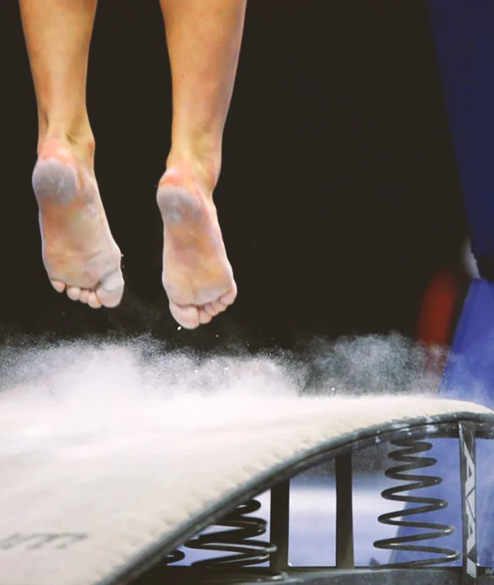
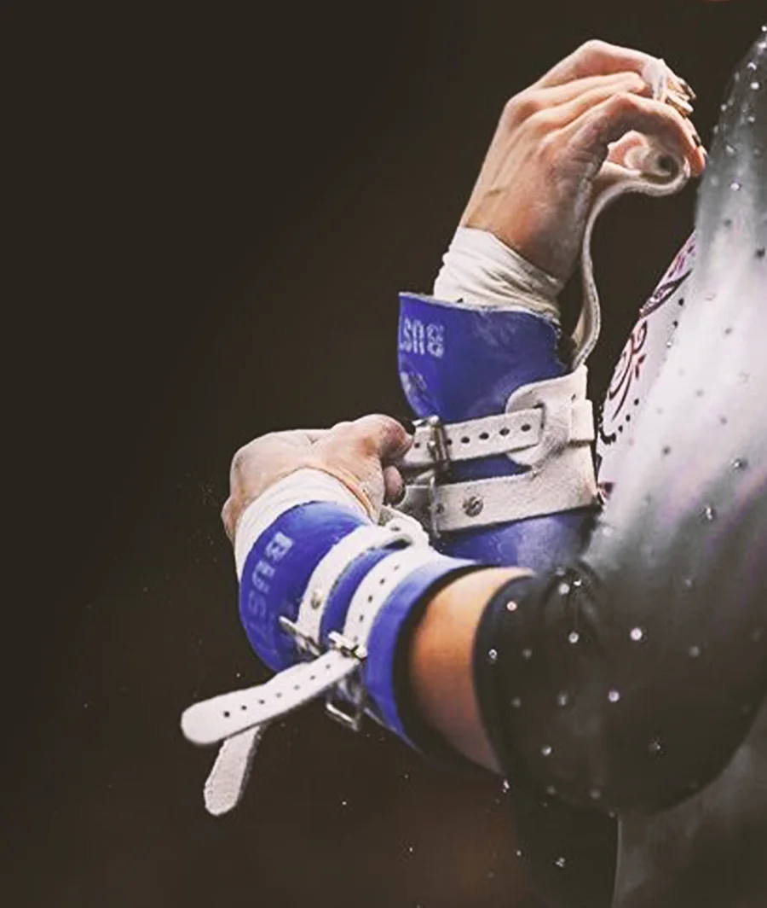
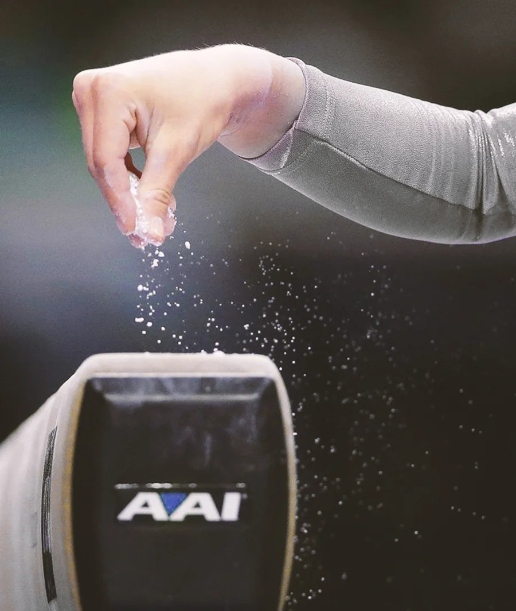
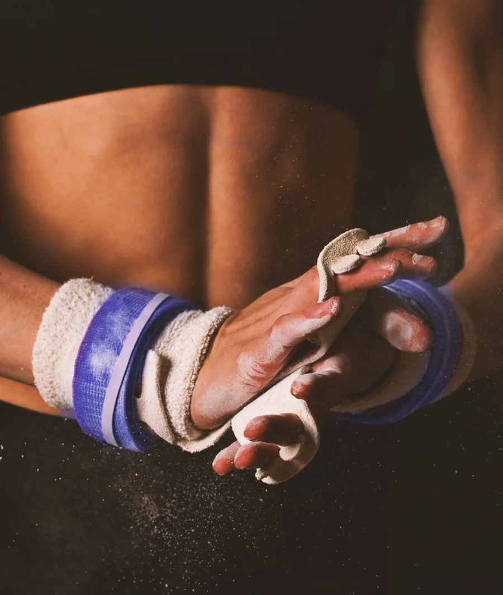

Forza · Eleganza · Passione
Ginnastica Artistica.
Un percorso che trasforma il movimento in espressione, aiutando ogni atleta a sviluppare tecnica, sicurezza e determinazione.
Molto più di uno sport
La bellezza del movimento.
La ginnastica artistica unisce forza, eleganza e creatività. Dal corpo libero alla trave, dalle parallele al trampolino, ogni esercizio diventa un'occasione per conoscere il proprio corpo e superare gradualmente nuovi traguardi.
Attraverso allenamenti progressivi e il supporto degli istruttori, gli atleti imparano disciplina, rispetto e fiducia nelle proprie capacità, vivendo allo stesso tempo il valore della squadra.
Crescere attraverso lo sport
I benefici della Ginnastica Artistica.
Un'attività completa che sostiene lo sviluppo fisico, mentale e relazionale.
Sviluppo fisico
Rafforza muscoli, ossa e articolazioni, migliorando forza e flessibilità.
Coordinazione
Allena il controllo del corpo, la postura, l'equilibrio e l'orientamento.
Concentrazione
Aiuta a focalizzarsi sugli obiettivi e a costruire disciplina nel tempo.
Fiducia
Insegna ad affrontare le paure e a riconoscere i propri progressi.
Squadra
Favorisce collaborazione, rispetto e relazioni positive con compagni e allenatori.
Creatività
Stimola l'espressione personale attraverso musica, routine e movimento.
Movimento e ritmo
La musica dei corpi liberi.
La musica accompagna ogni gesto e dà personalità all'esercizio di corpo libero. Ritmo, interpretazione e movimento si incontrano per trasformare la tecnica in una performance capace di emozionare.
Segui il canale YouTube ufficiale Fly Gym, ascolta le musiche e trova l'ispirazione per il tuo prossimo esercizio.
Segui Fly Gym su YouTubeOrganizza il tuo allenamento
Orari Ginnastica Artistica.
Scegli la sede per consultare giorni, gruppi e fasce orarie.

Sede 01
San Stino di Livenza
Visualizza gli orari

Sede 02
Fossalta di Portogruaro
Visualizza gli orari

Sede 03
Caorle
Orari in arrivo

Sede 04
Oderzo
Visualizza gli orari
Allenati vicino a te
Quattro sedi, una grande squadra.
Il percorso di Ginnastica Artistica è disponibile in tutte le sedi Fly Gym.
San Stino di Livenza
Via Gallo 12, 30029 Corbolone (VE)Apri in Google MapsFossalta di Portogruaro
Via Ippolito Nievo 20, 30025 Fossalta di Portogruaro (VE)Apri in Google MapsCaorle
Strada San Giorgio 16, 30021 Caorle (VE)Apri in Google MapsOderzo
Via Verdi 69/B, 31046 Oderzo (TV)Apri in Google MapsIl primo passo può iniziare oggi
Vieni a provare la Ginnastica Artistica.
Conosci gli istruttori, scopri l'ambiente Fly Gym e vivi il tuo primo allenamento.